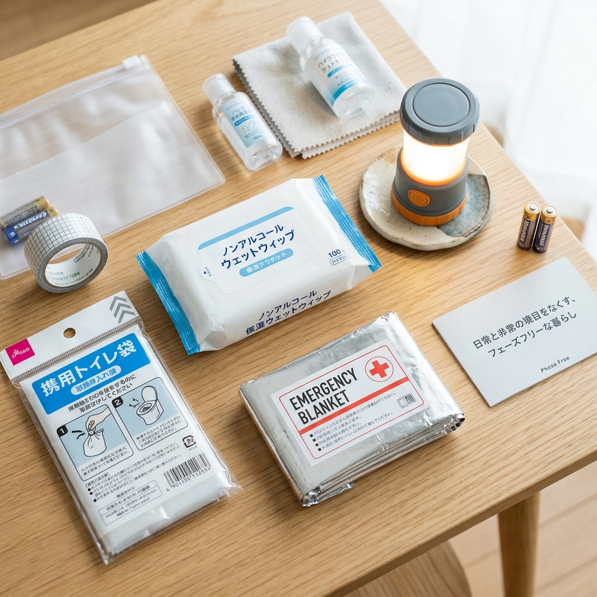

【体験レビュー】100均で『本当に使える』防災グッズを厳選！安かろう悪かろうを回避するコツ

「防災グッズをちゃんと揃えなきゃ…」と思いつつ、ネットで防災リュックのセットを見ると1万円超え。「ちょっと高いなぁ、また今度でいいや…」と後回しにしていませんか？
実は、今の100円ショップ（ダイソーやセリアなど）ってめちゃくちゃ進化していて、防災専門ブランド顔負けの優秀アイテムがゴロゴロしています。ただ、中には「いざという時にすぐ壊れそう」「使い物にならない」という地雷商品があるのも事実。
そこで今回は、防災オプチャの管理人が実際に購入して使い倒し、「これはガチで買い！普段使いもできて最高！」と確信した、2026年最新の「フェーズフリー（日常使いできる）防災グッズ」を本音でレビューします！
そもそも「フェーズフリー」って何？
最近よく耳にする「フェーズフリー」。「なんだか難しそうな言葉だな」と思うかもしれませんが、要するに「普段からお気に入りで使っているものを、そのまま災害時にも役立てよう！」という超シンプルな考え方です。
押し入れの奥にしまい込んだ「防災専用バッグ」って、いざという時に「電池が液漏れしてた」「使い方がわからない」ってなりがちなんですよね。普段のキャンプや旅行、お風呂上がりのスキンケアなどで使っているアイテムなら、状態も常にわかるし、使い慣れているからパニックになっても慌てずに済みます。しかもお財布に優しい！
実際に使って感動した！100均の神アイテム5選
① キャンプコーナーにある「伸縮ランタン型LEDライト」
これ、めちゃくちゃお気に入りです。普段はベッドサイドに置いて間接照明や読書灯として使っています。本体を上に引き出すだけで自動でピカッと点灯するんですが、暖色系の柔らかい光で雰囲気がすごくいいんです。
もし停電が起きても、暗闇のなかでサッと引き上げるだけで部屋全体を明るく照らせる頼れる存在。これが数百円（一部300円〜500円商品もありますがコスパ最高）で買えるのはバグレベルです。
② 体を拭くだけじゃない「ノンアルコール大判からだふきシート」
災害時の断水でシャワーが使えないとき、これがあると本当に救われます。ポイントは「アルコールフリー（ノンアルコール）」であること。除菌用のアルコール入りシートで全身を拭くと、肌がガサガサになって特に冬場は最悪なことになります。赤ちゃんでも使える優しいタイプがベスト。
普段は夏のスポーツの後や、キャンプでシャワーがないとき、あるいは部屋のササッと掃除にも使えて無駄がありません。
③ スペースを全く取らない「圧縮プレスタオル」
ダイソーの化粧品コーナーやトラベルコーナーで見つかる、タブレット状にガチガチに固められたタオルです。ちょっと水を含ませるだけで、手品のようにふんわりしたフルサイズのタオルに広がります！
防災リュックや普段の通勤バッグの片隅にポンと放り込んでおいても一切邪魔になりません。出張や旅行のときにも重宝しています。
④ トイレ問題の救世主「凝固剤入り携帯トイレ袋」
「災害時の備えで一番大事なものは？」と聞かれたら、私は迷わず「非常用トイレ」と答えます。水や食料は最悪数日我慢できても、排泄だけは1分も我慢できません。水が流れないトイレの不衛生さはパニックの元になります。
100均の携帯トイレ袋はクオリティが高く、便器に被せて用を足し、粉を振りかけるだけで一瞬でゼリー状に固まって臭いもシャットアウトしてくれます。普段も長距離ドライブの渋滞対策として、車のダッシュボードに3個は常備しています。
⑤ 避難所でも周りに迷惑をかけない「静音アルミあったかブランケット」
冷え込む体育館などの避難所で大活躍するアルミシートですが、昔のやつは動くたびに「カサカサ！ガサガサ！」と結構デカい音がして、静まり返った避難所ではすごく気まずい思いをしました。
最近の100均は優秀で、「シャカシャカ音が少ない静音タイプ」がちゃんと売られています。普段の車中泊や冬のアウトドア、スポーツ観戦のひざ掛けとしてもバッチリ使えます。
⚠️ 100均で『買ってはいけない』要注意なもの
- スマホのモバイルバッテリー： 100均でも500円〜1000円レンジで売られていますが、品質のバラつきや発熱のリスク、容量の少なさを考えると、命綱であるスマホの充電器は「Anker」などの実績あるメーカー品を家電量販店で買うべきです。ここはケチっちゃダメ！
- 安すぎる携帯ラジオ： チューニングが合いにくく、ノイズだらけで情報が聞き取れないことがあります。ラジオも避難時の重要情報源なので、防災メーカーのものを強くおすすめします。
まとめ：今日の帰りに、宝探し気分で寄ってみて！
「防災対策」と思うと重い腰が上がらないですが、「普段の暮らしがちょっと便利でおしゃれになるアイテム」を探しにいく感覚なら楽しいですよね。
今日お仕事や学校の帰りに、ぜひお近くの100円ショップの「アウトドア・トラベルコーナー」や「防災コーナー」をのぞいてみてください。「あ、これ普段も使えそう！」というお気に入りを見つけることが、あなたと家族を守る第一歩になりますよ！